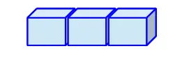
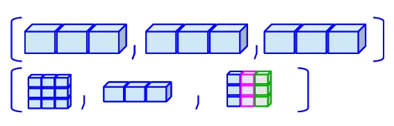
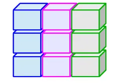

A single element of data in R typically falls into one of these types, or “classes” (there are others, but they are beyond the scope of this course):
logical (sometimes called boolean): Data take on the value of either TRUE or FALSE.
integer: Data are whole numbers (those numbers without a decimal point), e.g., 1, 2, -999. To explicitly create an integer data type, use the suffix L (e.g. x <- 2L).
numeric (also called double): Data are numbers that contain a decimal, e.g., 0.001, 1.0, -273.16.
character: Data are text values, or “strings”, e.g., "cat", "I like bananas", or "Everest is 8848.9 m tall". You can think of character strings as a word or sentence or paragraph. A special type of character string is a factor, which is a string but with additional attributes (like levels or an order).
Any of these can also contain NA to represent missing values.
Common data types in R
Quick Tip
You can see what data type or class an object is using the class() function, or you can use a logical test such as: is.numeric(), is.character(), is.logical(), and so on.
science_rocks <-"yes it does!"class(science_rocks)
[1] "character"
is.numeric(science_rocks)
[1] FALSE
is.character(science_rocks)
[1] TRUE
Data structures in R
Working with more than one data point, we need to think about how to systematically organize and store collections of data. Here are five common data structures used in R (and other programming languages):
Data structures in R: vectors
A vector is the most common and most basic data structure in R.

A vector contains one or more elements, all with the same data type.
Think back to our age_yrs vector. That was a vector of three elements each with a data type of numeric.
We can create a vector using the c() function (“combine”):
age_yrs =c(5, 3, 7)
Data structures in R: vectors
Each vector can contain only one data type/class. If you try to combine classes, R will “coerce” the other elements to the least restrictive class: logical –> integer –> numeric –> character
chr_vec <-c("hello", "goodbye", "see you later"); class(chr_vec)
### use c() to combine different types; what's the result?combined_vec <-c(TRUE, 3.14, "puppies!"); class(combined_vec)
[1] "character"
combined_vec ### look, all elements are character (in quotes)
[1] "TRUE" "3.14" "puppies!"
Data structures in R: vectors
You can set or retrieve a value of an element in a vector using that element’s “index” or position.
A set of single square brackets [...] is used to select an element or set of elements for vectors.
numeric_vec <-c(5, 1.3, 10, 2.8, 17, -1)numeric_vec[2] ### retrieve the second element
[1] 1.3
numeric_vec[3:5] ### retrieve the third through fifth element
[1] 10.0 2.8 17.0
numeric_vec[c(1, 3, 6)] ### use a vector to retrieve elements
[1] 5 10 -1
numeric_vec[2] <-3.14### set the value of the second elementnumeric_vec ### element 2 has been changed
[1] 5.00 3.14 10.00 2.80 17.00 -1.00
Data structures in R: matrix and array
Matrices and arrays are like vectors, but two-dimensional and N-dimensional, respectively.
A vector has only one dimension (length)
A matrix has two dimensions (rows/columns).
An array has more than two dimensions (e.g., a cube, but can also contain as many dimensions as you need)
Like a vector, all elements of a matrix or array must be of the same type.
Tip
Matrices and arrays are useful for mathematical purposes, e.g., linear algebra, but not as commonly used for data science purposes, so we’ll skip right on past them!
Data structures in R: lists
A list is another common and basic data structure in R.

Like a vector, a list contains one or more elements, but unlike a vector, each element can be a different type (including vectors and other lists!).
We can create a list using the list() function.
### a list containing three numeric elements:list_of_nums <-list(5, 3.14, -999)### a list containing elements of different typeslist_of_stuff <-list(5, 7:10, c("puppies", "kittens"), c(TRUE, FALSE))list_of_stuff[[2]]
[1] 7 8 9 10
Data structures in R: lists
Like a vector, you can set or retrieve a value of an element in a list using that element’s “index” or position.
A set of double square brackets [[...]] is used to select an element or set of elements for lists.
### a list containing elements of different typeslist_of_stuff <-list(5, 7:10, c("puppies", "kittens"), c(TRUE, FALSE))class(list_of_stuff[[2]]) ### numeric vector: 7, 8, 9, 10
[1] "integer"
class(list_of_stuff[[3]]) ### character vector: "puppies" and "kittens"
[1] "character"
list_of_stuff[[1]] <-list("bananas", c(1, 2, 4))class(list_of_stuff[[1]]) ### was numeric, now it's a list!
[1] "list"
Data structures in R: data frames
A data frame is another common data structure in R, and commonly used in data science for tabular data.

Like a matrix, a data frame is two dimensional - but each column can be of a different type!
We can create data frames in many ways, including data.frame()
More commonly we will read in tabular data from spreadsheets like Excel files (.xlsx) and comma-separated value (.csv) files.
Data structures in R: data frames
Data frames have one or more named columns, each representing a variable, and rows representing observations with values for each variable. Let’s create a simple one representing three dogs, with ages (in human years) and weights (in pounds).
name weight age
1 Waffle 35 5
2 Khora 60 9
3 Teddy 50 7
Code styling
Note that spacing, tabs, and new lines don’t affect how the R code runs - but they can help make it easier to read! Use code styling to help communicate your intentions to others.
Data structures in R: data frames
We can explore our data frame using the RStudio IDE.
Try these out to see how they work:
Find the dog_df data frame in the Environment pane and click on it
Interactive view, try sorting and searching!
Find the data frame in the Environment pane and click on the blue arrow next to it
In the Console, type head(dog_df) to see the first few rows
Note, our data frame is very short so you’ll see all the rows!
In the Console, type View(dog_df) (note capital V)
This is the same as clicking on it in the Environment pane.
Data structures in R: data frames
A data frame is just a named list of vectors!
To help understand how to access information in a data frame, it is helpful to look at it as a list of vectors, each vector of the same length, and given a handy name!
Because a data frame is a list of vectors, our single [...] and double [[...]] square brackets can work, but there are other more elegant ways of retrieving and setting values in a data frame.
Data structures in R: data frames
Accessing elements of a data frame
We can access individual elements of a data frame using a 2-d square bracket notation with numbers: example_df[<row(s)>, <column(s)>].
We can access entire columns/variables using their name, in two ways:
Double square brackets: example_df[['<colname>']]
Dollar sign notation: example_df$<colname>
We can access specific rows of a variable using a combination:
Dollar sign notation plus index: example_df$<colname>[<element number>]
Data structures in R: data frames
Accessing values of elements of a data frame
Using the dog_df we created previously:
dog_df[1, 3] ### first row, third column: Waffle's age
[1] 5
### leave row or column blank to choose all in that row/col:dog_df[ , 1] ### all rows, first column: name of all dogs
[1] "Waffle" "Khora" "Teddy"
dog_df[['weight']] ### weight of all dogs, in order
[1] 35 60 50
dog_df$age ### age of all dogs, in order
[1] 5 9 7
dog_df$name[2] ### name of all dogs, then choose only element 2
[1] "Khora"
Data structures in R: data frames
Changing values of elements of a data frame or adding new variables
Using the dog_df we created previously, let’s update Waffle’s age and weight, and then add a new column describing the color of each dog.
dog_df[1, 2] <-34### assign new value to row 1, col 2dog_df$age[1] <-6### assign new value to age[1]### create a new column using the $ operator, and assign valuesdog_df$color <-c('tan', 'grey', 'brown') dog_df ### inspect the updated data frame
name weight age color
1 Waffle 34 6 tan
2 Khora 60 9 grey
3 Teddy 50 7 brown
Data structures in R: data frames
Accessing elements of a data frame
Note
These methods of accessing data within a dataframe will always work in R, as they are part of Base R, or the core functionality of the R language.
Later we will introduce you to a different approach to coding in R, called the Tidyverse, that you may find easier and more elegant.